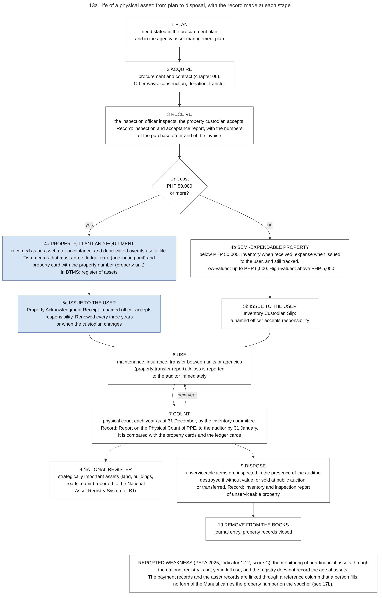

On this page
Part of the Philippine PFM Atlas. Facts as of 8 October 2026. The codes in the column "Basis" are explained in Reference F. "GK" means general knowledge that I did not open in a source during this work.
1. The question this process answers
After a supplier is paid, the budget records of that purchase end. In which records does the purchased item continue, who is responsible for it, and how does the government know what it owns?
2. The idea in plain words
The budget follows money for one year. A building, a vehicle or a computer exists for many years. Two other kinds of record follow the item after the payment.
- The property record says where the item is and which officer is responsible for it.
- The accounting record says what the item cost and how much of that cost is not yet charged as an expense.
The accounting manual prescribes both records for the same asset, in two different units: the ledger card in the accounting unit and the property card in the property unit. It requires that the two are reconciled [GAM-V1 Ch.10 s.42]. The reason is that the unit which holds the goods must not keep the only record of them.
A physical count compares both records with the items that really exist. Without the count, the two records can agree with each other and still be wrong.
Not every item is recorded in this full way. An item with a unit cost of PHP 50,000 or more is recorded as property, plant and equipment: an asset whose cost is distributed over the years of its use. An item below that amount is semi-expendable property: it is recorded as inventory when it is received and as an expense when it is issued to its user, and the item is still issued to a named officer and tracked [GAM-V1 Ch.8 s.10][COA2022-004]. The amount of PHP 50,000 is from a circular of COA of 2022. The Manual of 2015 still prints the earlier amount of PHP 15,000 [GAM-V1 Ch.10 s.3].
The Manual gives five conditions for recording an item as property, plant and equipment: future benefit or service is probable, the cost can be measured, "beneficial ownership and control clearly rest with the government", the asset is used for the objectives of the government, and the threshold is met [GAM-V1 Ch.10 s.3]. The threshold applies to each item, and items that work together as one network count as one asset [GAM-V1 Ch.10 s.4].
A case where the process works: a vehicle is accepted, recorded as an asset in the books and in the property records, issued to a named officer, found at each yearly count, and removed from both records when it is sold.
A case where it fails: the vehicle is paid and recorded in the accounting books, but the property record is not updated when the vehicle moves to another office. At the next count the books show an asset that the counting team cannot find in the place stated. The 2025 PEFA assessment rates the monitoring of non-financial assets C: the national registry is not yet in full use and does not record the age of assets [PEFA2025].
Terms. The capitalization threshold is the amount from which an item is recorded as an asset. Depreciation is the yearly charge that distributes the cost of an asset over its useful life. An Inventory Custodian Slip is the document by which semi-expendable property is issued to a user. An accountable officer is an officer who holds government money or property and is responsible for it.
3. Authorities and their roles
| Authority | Role in this process | Basis |
|---|---|---|
| COA | Sets the accounting rules for property, including the capitalization threshold of PHP 50,000 from 2022. Audits property | COA2022-004, CONST IX-D.2 |
| Head of agency | Is immediately and primarily responsible for the property of the agency. Approves the report on the physical count | PD1445 s.102, GAM-V2 App.73 |
| Property (supply) unit of the agency | Receives, keeps, issues and records items. Its custodian signs the acceptance of a delivery. Keeps the stock cards and the property cards, and assigns the property number | GAM-V1 Ch.8 s.15, Ch.10 s.42, GAM-V2 App.58, App.69 |
| Accounting unit of the agency | Records the asset, the depreciation and the removal in the books. Keeps the ledger cards | GAM-V1 Ch.10 s.8, s.27, s.42, GAM-V2 App.57, App.70 |
| Inspection officer or inspection committee | Inspects a delivery and signs that it is in order as to quantity and specifications. The property custodian signs the acceptance. These are two different signers | GAM-V2 App.62, GAM-V1 Ch.8 s.15 |
| Officer who receives an item | Accepts responsibility for it by signing the issue document: the Property Acknowledgment Receipt for an asset, the Inventory Custodian Slip for semi-expendable property | GAM-V2 App.71, App.59, COA2022-004 |
| Inventory committee of the agency | Counts the property each year and prepares the Report on the Physical Count of Property, Plant and Equipment as at 31 December. Counts the inventories every six months | GAM-V1 Ch.10 s.38, Ch.8 s.13, GAM-V2 App.73, App.66, COA2022-004 |
| COA auditor | Verifies the count report. Is present when unserviceable property is inspected. Is told immediately of a loss | GAM-V2 App.73, PD1445 s.79, GAM-V1 Ch.10 s.41 |
| Disposal committee | Inspects, values and disposes of items that can no longer be used | GK |
| BTr | Keeps the National Asset Registry System, a list of strategically important non-financial assets. Bonds accountable officers. Leads the financial instruments of the government against disaster risk (parametric insurance and a catastrophe bond) | BTR-SYS, EO449, ROADMAP2024 |
| DOF, DBM and NEDA (now DEPDev) | Issued a joint circular in 2023 that requires agency asset management plans | ROADMAP2024 |
| DBM | Provides the property, plant and equipment function of BTMS | CL2025-8 |
4. Stages in the life of an asset
The numbers are those of diagram 13a. "App." is the number of the form in Volume II of the accounting manual.
| No. | Stage | What happens | Record made | Basis |
|---|---|---|---|---|
| 1 | Plan | The need is stated in the procurement plan and in the asset management plan of the agency | Annual Procurement Plan, asset management plan | RA12009 s.7, ROADMAP2024 |
| 2 | Acquire | The requesting office prepares a purchase request after the property unit finds that the item is not in stock. Procurement and contract follow. Other ways are construction, donation and transfer from another agency | Purchase request, then purchase order or contract | GAM-V1 Ch.8 s.13, GAM-V2 App.60, App.61, RA12009. Donation: GK |
| 3 | Receive | The property custodian signs the delivery receipt. The inspection officer inspects against the delivery receipt and the purchase order. The custodian signs the acceptance, complete or partial | Inspection and acceptance report in four copies, with the numbers of the purchase order and of the invoice. In BTMS: goods received note | GAM-V1 Ch.8 s.15, GAM-V2 App.62. BTMS: CL2025-8 |
| 4a | Record as property, plant and equipment | Unit cost of PHP 50,000 or more. Recorded as an asset "after inspection and acceptance of delivery", and depreciated | Journal entry. Ledger card in the accounting unit. Property card in the property unit, with the property number. Register in BTMS | Threshold: COA2022-004. Recording and cards: GAM-V1 Ch.10 s.8, s.42, GAM-V2 App.69, App.70. Register: CL2025-8, BTMS-SITE |
| 4b | Record as semi-expendable property | Unit cost below PHP 50,000. Low-valued up to PHP 5,000, high-valued above PHP 5,000 | Inventory when received, expense when issued to the user, and tracked | GAM-V1 Ch.8 s.10, COA2022-004 |
| 5a | Issue an asset to its user | A named officer accepts responsibility. The receipt is renewed every three years, or when the custodian changes | Property Acknowledgment Receipt, with the property number | GAM-V2 App.71 |
| 5b | Issue semi-expendable property to its user | A named officer accepts responsibility | Inventory Custodian Slip | GAM-V1 Ch.8 s.11, GAM-V2 App.59, COA2022-004 |
| 6 | Use | Depreciation in equal amounts over the useful life, for every asset except land. Maintenance, insurance, transfer between units or agencies. A loss is reported to the auditor immediately, and the officer applies for relief within thirty days | Property transfer report. Report of lost, stolen, damaged or destroyed property | GAM-V1 Ch.10 s.27, s.41, GAM-V2 App.75, App.76, PD1445 s.76, s.77. Insurance: GK |
| 7 | Count | Physical count each year. The report is as at 31 December and reaches the auditor not later than 31 January. It is compared with the property cards and the ledger cards | Report on the Physical Count of Property, Plant and Equipment, certified by the inventory committee, approved by the head of agency and verified by the representative of COA | GAM-V1 Ch.10 s.38, GAM-V2 App.73, COA2022-004 |
| 8 | Report to the national register | Strategically important assets such as land, buildings, roads, bridges, irrigation systems and dams | Entry in the National Asset Registry System | BTR-SYS. How the data reach the system: not described |
| 9 | Dispose | Items that can no longer be used are inspected in the presence of the auditor. An item without value is destroyed. Other items are sold at public auction, or by private sale at a price that COA approves when the auction fails | Inventory and inspection report of unserviceable property, with the number of the official receipt of the sale | PD1445 s.79, GAM-V2 App.74. Disposal committee: GK |
| 10 | Remove from the books | The asset leaves the accounting and property records | Journal entry | GAM-V1 Ch.10 s.41. Entry for a sale: GK |
A building or a road that is built under a contract
The cost of a work under construction is collected in the account Construction in Progress, on a ledger card that the accounting unit keeps for each project. The card names the project, the contract period, the contractor with its tax number, and the project cost, and it lists each voucher and journal entry [GAM-V2 App.77]. When the completed work is delivered and accepted, the cost moves to the asset account, for example Buildings [GAM-V1 Ch.10 s.8]. Chapter 07, section 7.2, follows the payments of such a contract.
Two rules on cost. Interest on a loan of the national government is an expense in the books of BTr and is not added to the cost of the asset in the books of the agency [GAM-V1 Ch.10 s.8]. An asset that a private operator builds under a concession is recorded by the government body that granted the concession, together with a liability of the same amount, when that body controls the services and the remaining interest in the asset [GAM-V1 Ch.14 s.3, s.5]. Chapter 19 describes such contracts.
Supplies
Supplies have two records in the same way: a supplies ledger card in the accounting unit, with quantities and cost, and a stock card in the property unit, with quantities only. They are counted every six months. An issue to a user is made on a requisition and issue slip, and the accounting unit charges the expense from a monthly report of the supplies issued [GAM-V1 Ch.8 s.9, s.13, s.16, Annex H][GAM-V2 App.57, App.58, App.63].
5. Documents and identifiers
| Document | Identified by | It quotes | Basis |
|---|---|---|---|
| Purchase request | Request number | Responsibility center code, stock or property number of the item requested | GAM-V2 App.60 |
| Inspection and acceptance report | Report number | Number and date of the purchase order, number of the invoice, responsibility center code | GAM-V2 App.62 |
| Property card | Property number, assigned by the property unit | Description, a reference to the acceptance report or the receipt of the user, receipts, issues, transfers, balance | GAM-V2 App.69 |
| Property, plant and equipment ledger card | Class of asset, with the object account code | The journal entry voucher as reference, cost, depreciation, repair history | GAM-V2 App.70 |
| Property Acknowledgment Receipt | Receipt number: year, month and a serial number | Property number, date acquired, amount, the user and the custodian | GAM-V2 App.71 |
| Inventory Custodian Slip | Slip number | Inventory item number, officer | GAM-V2 App.59, COA2022-004 |
| Construction in progress ledger card | Project | Contractor with tax number, contract period, project cost, vouchers and journal entry vouchers | GAM-V2 App.77 |
| Report on the Physical Count | Agency and date of the count | Property number, quantity by the card and by the count, shortage or overage | GAM-V2 App.73, COA2022-004 |
| Property transfer report | Report number | Property number, kind of transfer | GAM-V2 App.76 |
| Inventory and inspection report of unserviceable property | Report | Property number, manner of disposal, number of the official receipt of a sale | GAM-V2 App.74 |
| Journal entry voucher | Its number | Asset account code | GAM-V2 App.36. In BTMS, asset transactions create the journal entry: BTMS-SITE |
| Entry in the National Asset Registry System | Not described | Asset, agency | BTR-SYS |
The property number is assigned by the property unit, and no form of the Manual carries it on the voucher or on the journal entry voucher. The way from an asset back to its payment therefore passes through a reference column: the property card refers to the acceptance report, the acceptance report carries the number of the purchase order, and the purchase order carries the number of the obligation request (see diagram 17b). A person fills each of these references.
6. Information systems
| System | Owner | Use | Basis |
|---|---|---|---|
| Property records of the agency | Each agency | Property cards, issue documents, count reports. The Manual prescribes the forms and no system | GAM-V2. Medium in each agency: GK |
| eNGAS or other accounting software | COA, agency | Asset accounts and depreciation in the books | COA-GAS. Detail: GK |
| BTMS, property, plant and equipment function | DBM | Register of assets. Asset transactions create journal entries | CL2025-8, BTMS-SITE |
| National Asset Registry System | BTr | List of strategically important assets, for asset management and insurance. In March 2023 it held 359,689 assets of 40 agencies, with a value above PHP 2.0 trillion | BTR-SYS, ROADMAP2024 |
| PhilGEPS | PS-DBM | The acquisition | RA12009 s.20 |
7. Controls: what each one checks, and what it does not check
| Control | What it checks | What it does not check |
|---|---|---|
| Capitalization threshold | Which items become assets in the books | That the item exists |
| Two records in two units, reconciled | That the unit that holds the items and the unit that keeps the books agree | That the items exist |
| Two signers on the acceptance report | That the person who inspects is not the person who takes the goods into custody | The quality of the inspection |
| Issue document signed by a named officer | That one person is responsible for each item | That the item is used for official purposes |
| Bonding of accountable officers | That a loss can be recovered | |
| Yearly physical count, verified by the representative of COA | That the records agree with the items that exist | The time between two counts |
| Presence of the auditor at the inspection of unserviceable property | That an item is not removed from the records without a second witness | |
| National register | That the important assets are known at national level | Assets and agencies that are not yet in the register |
| Audit | The property accounts | The 2009 rules on the settlement of accounts say that they do not cover property accounts. I did not open the rules that apply to property accounts |
Basis of the rows: COA2022-004, GAM-V1 Ch.10 s.38, s.42, GAM-V2 App.62, App.73, PD1445 s.79, s.101, BTR-SYS, COA2009-006.
8. What the 2025 assessment reports
| Finding | Basis |
|---|---|
| Financial assets are recorded and reported by BTr, but COA has reported persistent accounting issues (PEFA indicator 12.1, score C) | PEFA2025 |
| The monitoring of non-financial assets through the National Asset Registry System is not yet in full use, and the registry does not record the age of assets (indicator 12.2, score C) | PEFA2025 |
| The rules on the disposal of assets are rated B (indicator 12.3) | PEFA2025 |
| Agency asset management plans are required by a joint circular of 2023 | ROADMAP2024 |
9. Timing
| Time | Event | Basis |
|---|---|---|
| At acceptance | The asset enters the books and the property records | GAM-V1 Ch.10 s.8 |
| First month of use | Depreciation starts in the same month when the asset is ready for use on or before the 15th day, and in the next month otherwise | GAM-V1 Ch.10 s.27 |
| Every six months | Count of inventories. The report reaches the auditor by 31 July and 31 January | GAM-V1 Ch.8 s.13, GAM-V2 App.66 |
| 31 December | Date of the yearly physical count of property, plant and equipment | GAM-V1 Ch.10 s.38, COA2022-004 |
| 31 January | The count report reaches the auditor | GAM-V1 Ch.10 s.38 |
| 14 February | Year-end statements to COA, which include the asset accounts | PD1445 s.41 |
10. Diagram
Diagram 13a Life of a physical asset: from plan to disposal, with the record made at each stage
Code file: ../diagrams/mermaid/13a_asset_lifecycle.mmd. Rendered image: ../rendered/13a_asset_lifecycle.png.


- Question: after the supplier is paid, the budget records stop. In which records does the purchased item continue, and who is responsible for it?
- How to read it: read from top to bottom. A solid arrow leads to the next stage. The dotted arrow with the label "next year" shows that use and count are repeated each year. The other dotted arrow shows a report that is made in addition to the main sequence. Blue = property, plant and equipment.
- Idea: the budget follows money for one year. An asset lives for many years. It is followed in property records (who holds the item) and in accounting records (what it is worth). The two must agree with a physical count each year.
- Sources: capitalization threshold of PHP 50,000, semi-expendable property (low-valued up to PHP 5,000, high-valued above that), Inventory Custodian Slip, annual Report on the Physical Count of Property, Plant and Equipment as of 31 December [COA2022-004]. Property, plant and equipment register in BTMS, asset transactions create journal entries [CL2025-8][BTMS-SITE]. National Asset Registry System of BTr, agency asset management plans [BTR-SYS][ROADMAP2024]. Monitoring of non-financial assets through the national registry is not yet in full use and does not record the age of assets (indicator 12.2, score C), rules on disposal rated B (indicator 12.3) [PEFA2025]. Procurement plan [RA12009 s.7]. Bonding of accountable officers by BTr [EO449].
- From the accounting manual of 2015 and its forms: an item is recorded as an asset after inspection and acceptance [GAM-V1 Ch.10 s.8]. Two records for the same asset: the ledger card in the accounting unit and the property card in the property unit, which must be reconciled [GAM-V1 Ch.10 s.42][GAM-V2 App.69, App.70]. Receipt signed by the user, renewed every three years or when the custodian changes [GAM-V2 App.71]. Depreciation by equal yearly amounts, for all assets except land [GAM-V1 Ch.10 s.27]. Count each year, with a report as at 31 December that reaches the auditor by 31 January [GAM-V1 Ch.10 s.38][GAM-V2 App.73]. Loss: the auditor is told immediately [GAM-V1 Ch.10 s.41]. Transfer and disposal reports [GAM-V2 App.74, App.76]. Unserviceable property: inspected in the presence of the auditor, destroyed if it has no value, or sold at public auction [PD1445 s.79]. Items below the threshold: inventory when received, expense when issued to the user [GAM-V1 Ch.8 s.10].
- A later rule changed one number: the Manual gives a threshold of PHP 15,000. A circular of COA of 2022 raised it to PHP 50,000 [COA2022-004]. The diagram uses the later number.
- General knowledge, not opened in a source here: insurance with GSIS, and the disposal committee.
Mermaid code of diagram 13a
---
title: "13a Life of a physical asset: from plan to disposal, with the record made at each stage"
config:
flowchart:
wrappingWidth: 900
---
flowchart TB
A["1 PLAN<br/>need stated in the procurement plan<br/>and in the agency asset management plan"]
B["2 ACQUIRE<br/>procurement and contract (chapter 06).<br/>Other ways: construction, donation, transfer"]
C["3 RECEIVE<br/>the inspection officer inspects, the property custodian accepts.<br/>Record: inspection and acceptance report, with the numbers<br/>of the purchase order and of the invoice"]
Q{"Unit cost<br/>PHP 50,000<br/>or more?"}
D1["4a PROPERTY, PLANT AND EQUIPMENT<br/>recorded as an asset after acceptance, and depreciated over its useful life.<br/>Two records that must agree: ledger card (accounting unit) and<br/>property card with the property number (property unit).<br/>In BTMS: register of assets"]:::ppe
D2["4b SEMI-EXPENDABLE PROPERTY<br/>below PHP 50,000. Inventory when received, expense when issued<br/>to the user, and still tracked.<br/>Low-valued: up to PHP 5,000. High-valued: above PHP 5,000"]
E1["5a ISSUE TO THE USER<br/>Property Acknowledgment Receipt: a named officer accepts<br/>responsibility. Renewed every three years<br/>or when the custodian changes"]:::ppe
E2["5b ISSUE TO THE USER<br/>Inventory Custodian Slip:<br/>a named officer accepts responsibility"]
F["6 USE<br/>maintenance, insurance, transfer between units or agencies<br/>(property transfer report). A loss is reported<br/>to the auditor immediately"]
G["7 COUNT<br/>physical count each year as at 31 December, by the inventory committee.<br/>Record: Report on the Physical Count of PPE, to the auditor by 31 January.<br/>It is compared with the property cards and the ledger cards"]
H["8 NATIONAL REGISTER<br/>strategically important assets (land, buildings,<br/>roads, dams) reported to the National<br/>Asset Registry System of BTr"]
I["9 DISPOSE<br/>unserviceable items are inspected in the presence of the auditor:<br/>destroyed if without value, or sold at public auction,<br/>or transferred. Record: inventory and inspection report<br/>of unserviceable property"]
J["10 REMOVE FROM THE BOOKS<br/>journal entry, property records closed"]
A --> B --> C --> Q
Q -- "yes" --> D1 --> E1 --> F
Q -- "no" --> D2 --> E2 --> F
F --> G --> I --> J
G -.-> H
G -. "next year" .-> F
W["REPORTED WEAKNESS (PEFA 2025, indicator 12.2, score C): the monitoring of non-financial assets through<br/>the national registry is not yet in full use, and the registry does not record the age of assets.<br/>The payment records and the asset records are linked through a reference column that a person fills:<br/>no form of the Manual carries the property number on the voucher (see 17b)."]
J ~~~ W
classDef default fill:#ffffff,stroke:#444444,color:#111
classDef ppe fill:#d6e4f7,stroke:#1f4e8c,color:#111
11. Verification status
- Verified in a source: the conditions for recording an asset, the two records and their reconciliation, the receipt and acceptance of a delivery, depreciation, the yearly count and its report, loss, construction in progress, supplies, and the fields of the forms [GAM-V1 Ch.8, Ch.10][GAM-V2]. Responsibility, transfer and disposal of property in the Auditing Code [PD1445 s.76, s.77, s.79, s.101, s.102]. The threshold of PHP 50,000, the two classes of semi-expendable property and the Inventory Custodian Slip, through two documents that apply the COA circular [COA2022-004]. The asset function of BTMS [CL2025-8][BTMS-SITE]. The national register and its content [BTR-SYS][ROADMAP2024]. The scores [PEFA2025].
- A later rule changed the Manual: the threshold of PHP 15,000 in the Manual of 2015 is now PHP 50,000. I did not check whether other rules of the Manual on property were changed later, and I did not open the new forms that the circular of 2022 names.
- General knowledge, to check: insurance, the disposal committee, the entry for a sale.
- Not opened: the text of COA Circular No. 2022-004 itself, and the rules on the audit of property.
- Covered only briefly or not at all: land titles, infrastructure assets such as roads, intangible assets, heritage assets, biological assets. Chapter 19 covers the approval and the payments of a partnership with a private firm.